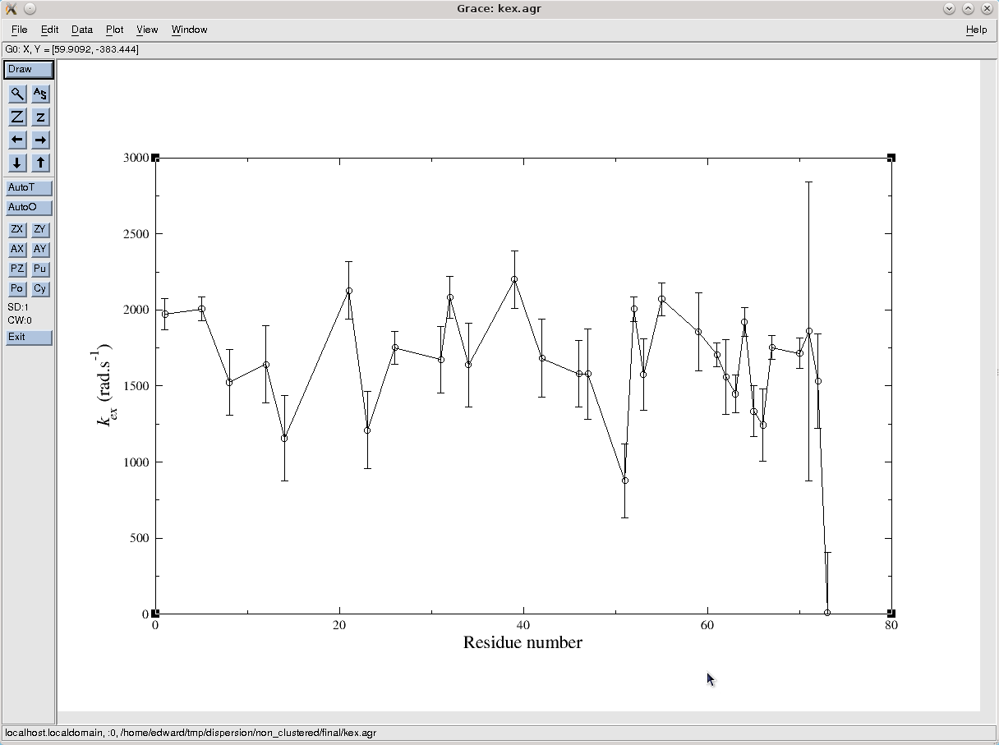
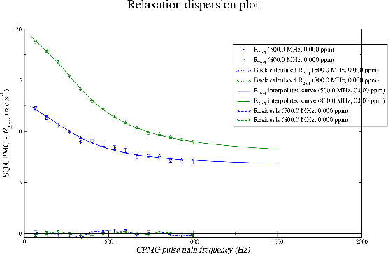

Next: Dispersion GUI mode - Up: The relaxation dispersion auto-analysis Previous: Dispersion GUI mode - Contents Index
To view the results of the analysis, the relax results window will have been automatically opened. If it was closed, click on the ``View→Results viewer'' menu entry or the ``Results viewer window'' button in the toolbar to open the window. This window will list all of the *.out text files and *.agr 2D Grace plots created by the auto-analysis. By double clicking on the file, these can be opened. The operating specific text editor will be launched for the text files. For the Grace files, the installed Grace version (Xmgrace, QtGrace, or GraceGTK) will be launched.
Firstly, to see which models have been chosen for the spin systems and which have no statistically significant dispersion, find the model.out file and double click on it. You should see the following:
[basicstyle=\ttfamily \scriptsize,numbers=none] # Parameter description: The dispersion model. # # mol_name res_num res_name spin_num spin_name value error None 1 GLY None N 'NS CPMG 2-site expanded' None None 2 GLY None N 'No Rex' None None 3 GLY None N 'No Rex' None None 4 GLY None N 'No Rex' None None 5 GLY None N 'CR72' None None 6 GLY None N 'No Rex' None None 7 GLY None N 'No Rex' None None 8 GLY None N 'NS CPMG 2-site expanded' None None 9 GLY None N None None None 10 GLY None N 'No Rex' None None 11 GLY None N 'No Rex' None None 12 GLY None N 'NS CPMG 2-site expanded' None None 13 GLY None N 'No Rex' None None 14 GLY None N 'CR72' None None 15 GLY None N 'No Rex' None None 16 GLY None N 'No Rex' None None 17 GLY None N 'No Rex' None None 18 GLY None N 'No Rex' None None 19 GLY None N 'No Rex' None None 20 GLY None N 'No Rex' None None 21 GLY None N 'CR72' None None 22 GLY None N 'No Rex' None None 23 GLY None N 'CR72' None None 24 GLY None N 'No Rex' None None 25 GLY None N 'No Rex' None None 26 GLY None N 'CR72' None None 27 GLY None N None None None 28 GLY None N None None None 29 GLY None N 'No Rex' None None 30 GLY None N None None None 31 GLY None N 'NS CPMG 2-site expanded' None None 32 GLY None N 'NS CPMG 2-site expanded' None None 33 GLY None N 'No Rex' None None 34 GLY None N 'NS CPMG 2-site expanded' None None 35 GLY None N 'No Rex' None None 36 GLY None N 'No Rex' None None 37 GLY None N 'No Rex' None None 38 GLY None N 'NS CPMG 2-site expanded' None None 39 GLY None N 'NS CPMG 2-site expanded' None None 40 GLY None N 'No Rex' None None 41 GLY None N 'No Rex' None None 42 GLY None N 'NS CPMG 2-site expanded' None None 43 GLY None N 'No Rex' None None 44 GLY None N 'No Rex' None None 45 GLY None N 'NS CPMG 2-site expanded' None None 46 GLY None N 'NS CPMG 2-site expanded' None None 47 GLY None N 'NS CPMG 2-site expanded' None None 48 GLY None N 'No Rex' None None 49 GLY None N 'No Rex' None None 50 GLY None N 'No Rex' None None 51 GLY None N 'CR72' None None 52 GLY None N 'NS CPMG 2-site expanded' None None 53 GLY None N 'NS CPMG 2-site expanded' None None 54 GLY None N None None None 55 GLY None N 'NS CPMG 2-site expanded' None None 56 GLY None N 'No Rex' None None 57 GLY None N 'No Rex' None None 58 GLY None N 'No Rex' None None 59 GLY None N 'CR72' None None 60 GLY None N 'No Rex' None None 61 GLY None N 'NS CPMG 2-site expanded' None None 62 GLY None N 'NS CPMG 2-site expanded' None None 63 GLY None N 'CR72' None None 64 GLY None N 'CR72' None None 65 GLY None N 'CR72' None None 66 GLY None N 'NS CPMG 2-site expanded' None None 67 GLY None N 'NS CPMG 2-site expanded' None None 68 GLY None N None None None 69 GLY None N None None None 70 GLY None N 'NS CPMG 2-site expanded' None None 71 GLY None N 'NS CPMG 2-site expanded' None None 72 GLY None N 'NS CPMG 2-site expanded' None None 73 GLY None N 'CR72' None
Excluding the deselected spin systems with the model `None' and those with no statistically significant dispersion, `No Rex', it can be seen that in some cased the `CR72' model is selected whereas in others the `NS CPMG 2-site expanded' model is selected. The differences between the `CR72' analytic model and the `NS CPMG 2-site expanded' numeric model are insignificant. To see this, open the CR72/chi2.out and NS CPMG 2-site expanded/chi2.out text files in the ∼/dispersion/log_non_clustered directory and compare the optimised chi-squared values (this can be performed with the mouse by using the pipe editor window, changing the current data pipe, and double clicking on the files in the results viewer window for each data pipe - see below for more details).
To see which spins have been assigned the model `No Rex' due to the R2eff/R1ρ insignificance level of 1.0 rad/s, search the log messages for `insignificance'. You should see:
[basicstyle=\ttfamily \tiny,language=relax_log,numbers=none] relax> relax_disp.insignificance(level=1.0) Deselecting spin ':2@N', the maximum dispersion curve difference for all curves is 0.772528040762 rad/s. Deselecting spin ':3@N', the maximum dispersion curve difference for all curves is 0.572686080104 rad/s. Deselecting spin ':4@N', the maximum dispersion curve difference for all curves is 0.20753288407 rad/s. Deselecting spin ':7@N', the maximum dispersion curve difference for all curves is 0.184120905625 rad/s. Deselecting spin ':10@N', the maximum dispersion curve difference for all curves is 0.746360942576 rad/s. Deselecting spin ':11@N', the maximum dispersion curve difference for all curves is 0.372702361421 rad/s. Deselecting spin ':13@N', the maximum dispersion curve difference for all curves is 0.261522940719 rad/s. Deselecting spin ':15@N', the maximum dispersion curve difference for all curves is 0.743965404051 rad/s. Deselecting spin ':16@N', the maximum dispersion curve difference for all curves is 0.198783344901 rad/s. Deselecting spin ':17@N', the maximum dispersion curve difference for all curves is 0.469568638477 rad/s. Deselecting spin ':18@N', the maximum dispersion curve difference for all curves is 0.720840385548 rad/s. Deselecting spin ':19@N', the maximum dispersion curve difference for all curves is 0.290773963568 rad/s. Deselecting spin ':20@N', the maximum dispersion curve difference for all curves is 0.983669594767 rad/s. Deselecting spin ':22@N', the maximum dispersion curve difference for all curves is 0.507488886605 rad/s. Deselecting spin ':24@N', the maximum dispersion curve difference for all curves is 0.984086643389 rad/s. Deselecting spin ':25@N', the maximum dispersion curve difference for all curves is 0.638104572082 rad/s. Deselecting spin ':29@N', the maximum dispersion curve difference for all curves is 0.525261970487 rad/s. Deselecting spin ':33@N', the maximum dispersion curve difference for all curves is 0.822112754666 rad/s. Deselecting spin ':35@N', the maximum dispersion curve difference for all curves is 0.713976877685 rad/s. Deselecting spin ':36@N', the maximum dispersion curve difference for all curves is 0.413602640091 rad/s. Deselecting spin ':37@N', the maximum dispersion curve difference for all curves is 0.302953864843 rad/s. Deselecting spin ':40@N', the maximum dispersion curve difference for all curves is 0.401535026435 rad/s. Deselecting spin ':41@N', the maximum dispersion curve difference for all curves is 0.805657060225 rad/s. Deselecting spin ':43@N', the maximum dispersion curve difference for all curves is 0.582523964429 rad/s. Deselecting spin ':44@N', the maximum dispersion curve difference for all curves is 0.325638582443 rad/s. Deselecting spin ':45@N', the maximum dispersion curve difference for all curves is 0.947956877688 rad/s. Deselecting spin ':49@N', the maximum dispersion curve difference for all curves is 0.872396631779 rad/s. Deselecting spin ':50@N', the maximum dispersion curve difference for all curves is 0.403543891199 rad/s. Deselecting spin ':56@N', the maximum dispersion curve difference for all curves is 0.468272490195 rad/s. Deselecting spin ':57@N', the maximum dispersion curve difference for all curves is 0.634215047495 rad/s. Deselecting spin ':58@N', the maximum dispersion curve difference for all curves is 0.953109267554 rad/s.
Search for `eliminate' to see which models have been removed due to the model elimination step (see section 11.9.9 on page ![[*]](crossref.png) for details).
For example for the CR72 model:
for details).
For example for the CR72 model:
[basicstyle=\ttfamily \tiny,language=relax_log,numbers=none] relax> eliminate(function=None, args=None) Data pipe 'CR72 - relax_disp (Mon Feb 17 18:00:16 2014)': The pA parameter of 0.50003 is less than 0.50100, eliminating the spin cluster [':6@N']. Data pipe 'CR72 - relax_disp (Mon Feb 17 18:00:16 2014)': The pA parameter of 0.50001 is less than 0.50100, eliminating the spin cluster [':38@N']. Data pipe 'CR72 - relax_disp (Mon Feb 17 18:00:16 2014)': The pA parameter of 0.50001 is less than 0.50100, eliminating the spin cluster [':42@N']. Data pipe 'CR72 - relax_disp (Mon Feb 17 18:00:16 2014)': The pA parameter of 0.50001 is less than 0.50100, eliminating the spin cluster [':45@N']. Data pipe 'CR72 - relax_disp (Mon Feb 17 18:00:16 2014)': The pA parameter of 0.50000 is less than 0.50100, eliminating the spin cluster [':46@N']. Data pipe 'CR72 - relax_disp (Mon Feb 17 18:00:16 2014)': The pA parameter of 0.50002 is less than 0.50100, eliminating the spin cluster [':47@N']. Data pipe 'CR72 - relax_disp (Mon Feb 17 18:00:16 2014)': The pA parameter of 0.50000 is less than 0.50100, eliminating the spin cluster [':48@N']. Data pipe 'CR72 - relax_disp (Mon Feb 17 18:00:16 2014)': The pA parameter of 0.50002 is less than 0.50100, eliminating the spin cluster [':60@N']. Data pipe 'CR72 - relax_disp (Mon Feb 17 18:00:16 2014)': The pA parameter of 0.50000 is less than 0.50100, eliminating the spin cluster [':62@N'].
To see the optimised parameter values, double click on the kex.agr file to see the exchange rates. This will open the grace.view user function window by which the file can be opened. The default settings produces the following graph:
|

|
The exchange rate for most spins experiencing exchange is between 1000 and 2000 s-1. Opening the pA.agr file, it can be seen that the population of state A is approximately 0.98. A number of spins have much lower values than this, but their errors are huge meaning that all but 3 are statistically the same as 0.98 (note that a proper ANOVA statistics analysis would be required to make such statements).
To see one of the dispersion curves, open the disp_64_N.agr file in Grace. The default settings will produce the graph:
|

|
To improve the appearance of this plot, please refer to the Grace software documentation.